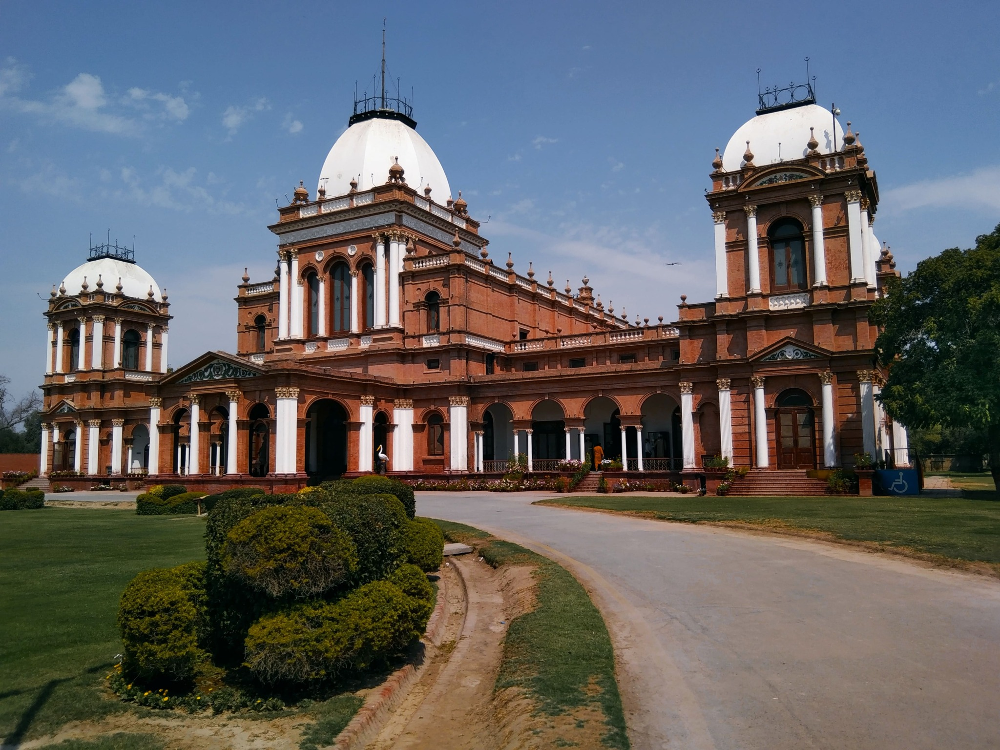
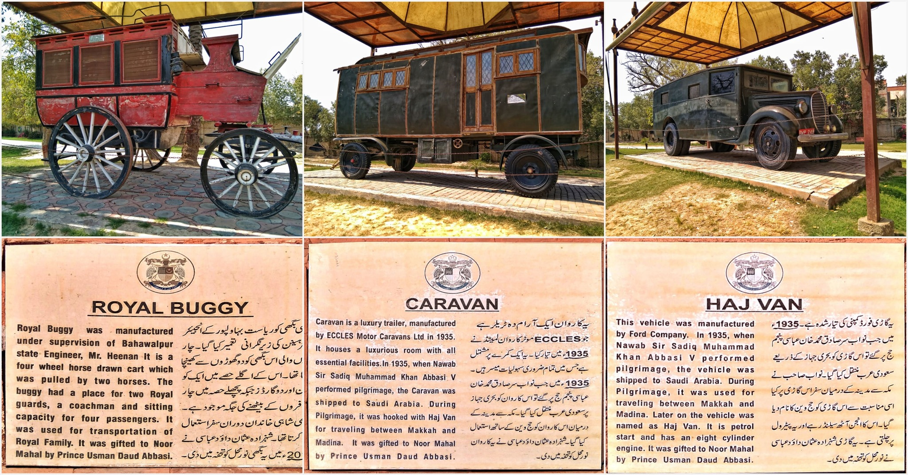
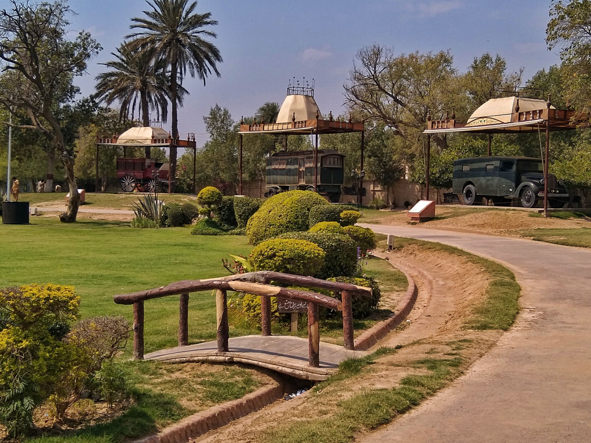
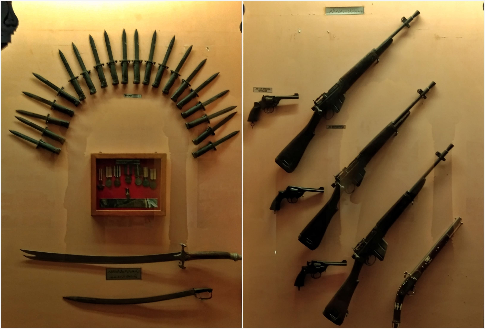
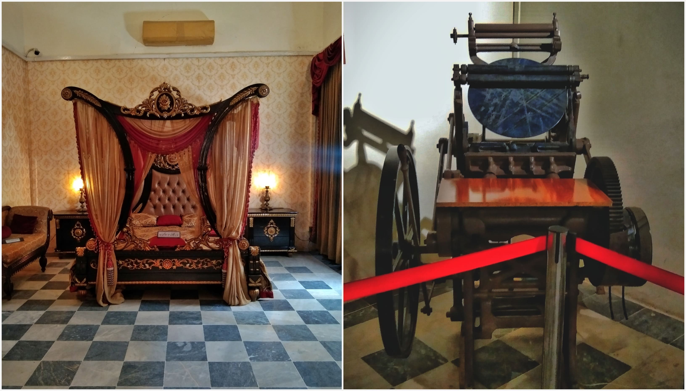
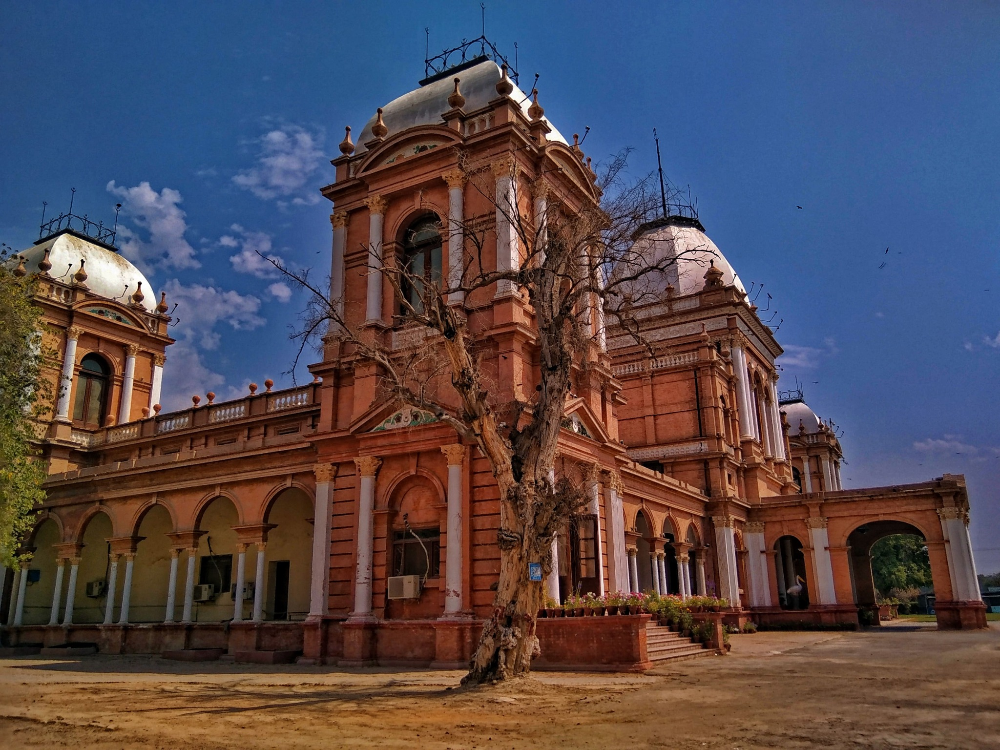

The crisp March air carried a gentle breeze, brushing against my face, and the quiet hum of the city faded as I stepped closer to the palace gates. The sun shone in its full glory over Bahawalpur as the white domes of Noor Mahal glowed like a scene from a fairy tale. I had seen it in photos countless times, but nothing compared to standing in front of it in person.
Built in 1872 by Nawab Sadiq Muhammad Khan IV for his wife, Noor. However, she stayed in Noor Mahal for a night only and never came back due to its close proximity to the Basti Malook Shah graveyard, which was visible from her balcony.
As I stepped inside from the outer gate, a welcoming scene unfolded before me. Between the entrance and the main palace building was neat grassy plots dotted with pathways, a spacious parking area, and a few small snack kiosks offering refreshments.
To the right and a little ahead of the palace (on my left as I walked in), three historic vehicles stood on display: The elegant royal buggy to the left, the sturdy caravan in the middle, and the Haj van to the right. Each had its own story, shared on the information boards placed beside them.
 Stepping into the palace, the first stop was the Darbar Hall. Its walls were adorned with portraits and details of different Nawabs of Bahawalpur. The hall itself was furnished with numerous chairs, including a prominent one on a raised platform, accompanied by a mirror, where the Nawab would preside over gatherings. The polished floors and soft light from the chandeliers made the space feel grand yet inviting.
From there, the journey continued into the galleries, where artifacts and documents offered insightful narratives about the Bahawalpur state, its rulers, and their contributions to the region's development. There were also framed weapons that were once used by the state.
Venturing further, the royal bedroom revealed a grand bed, a mirror, a cozy sofa, and softly glowing lamps. The adjacent rooms housed treasures from a bygone era: a working old printing machine, a piano, antique coins, Nawab’s dresses, royal band uniforms, an old camera, a spinning wheel, and a hand mill. Each item told its own story, preserving the cultural and technological heritage of the time.
Hope you enjoyed this tour of Noor Mahal! Its history and treasures are waiting to be discovered!
 